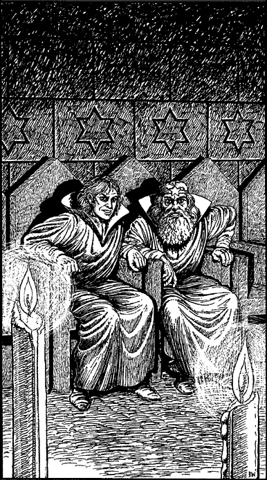

94
With your heart pounding in anticipation, you cast your gaze around the grey granite walls of a subterranean vault: your journey through the Shadow Gate has returned you to the land of your birth. You are standing in the Externment Chamber, a room located deep below the Guildhall of the Crystal Star in Toran. Facing you, and illuminated by the glow of several tall candles, is a line of throne-like seats. Two men, both attired in silken robes, are seated at the centre of the row, their heads bowed and their hands clasped in silent prayer. The sound of your footsteps stirs them from their meditations and, as they raise their heads, you recognize the face of your friend, Banedon, and your tutor, Lord Rimoah, speaker for the High Council of the Elder Magi.

‘The gods be praised!’ breathes Rimoah, his eyes wide with astonishment. ‘Skarn has returned. The prophecy is fulfilled.’
Slowly they rise and step forward to greet you, their movements hesitant and uncertain, scarcely able to believe that you are alive. Calmly you assure them that they are not dreaming, that you have indeed survived your exile to the Daziarn Plane and have returned, more determined than ever to avenge yourself upon Darklord Gnaag.
Eagerly Rimoah and Banedon listen as you recount your experiences in the Daziarn and, when you have finished, they tell you what has befallen Magnamund during your absence. Although it seemed that you spent little more than a few days in the Daziarn, more than eight years have passed since Gnaag caused you to fall into the Shadow Gate of Torgar. ‘He was quick to proclaim your death,’ says Banedon, unfurling a map of Northern Magnamund upon the floor of the chamber. ‘The news came as a terrible blow to us all.’
Lord Rimoah kneels and points at the map, indicating the city of Torgar with the tip of a slender crystal rod. ‘After your disappearance, Lord Adamas was killed, and the allied armies were quickly ejected from Torgar. Gnaag declared himself invincible, and in the wake of his victory the Darkland defeats were soon halted throughout central Magnamund. A terrible sense of hopelessness befell the allies, which was exploited to the full by the malevolent Gnaag. His sorcerers, the Nadziranim, created devices they call “Tanoz-tukor” to enable each of the Darklords to survive in territories outside their accursed realm. Previously they had been unable to survive beyond the Darklands for any great length of time and, during these rare, brief excursions, their powers were greatly reduced. Now they are able to lead their armies in battle personally, and they have been eager to exercise their newfound freedom.’
‘The war against the Darklords is all but lost,’ continues Banedon, his eyes cast down at the map, which is covered with black markers indicating the frightening number of countries Gnaag has added to his empire. ‘With the help of our allies in Durenor, Sommerlund has so far resisted his attempts at invasion, but now we find ourselves cut off from Durenor’s aid by a blockade of Darklord warships. Here,’ he says, pointing to the Gulf of Helenag, ‘is where Gnaag has constructed a huge naval base. It is called Argazad, and it is from here that he launches his fleet of ironclad warships to blockade our coast. The Sommlending navy is no match for these monstrous sea machines, and without the troops, food, and weapons we have been receiving by sea from Durenor, our days are numbered.’
Lord Rimoah rises to his feet and stares fixedly into your eyes. ‘Your skill, bravery, and your vow to avenge the death of the Kai are the keys to our salvation. Only you, Lone Wolf, can save us now. You are our only hope in this hour of darkness.’